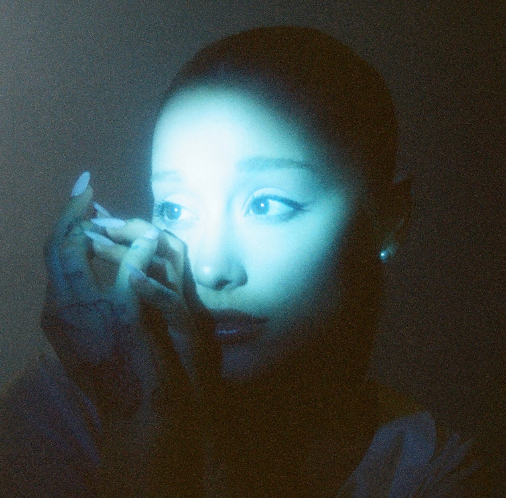

0/280

This is a fictional, fan-made X feed created as an interactive world-building experience for Chapter 16 of Trulisthetic’s Cynthiana fanfiction, Are We Still Trending?
This project is unofficial and is not affiliated with or endorsed by Ariana Grande, Cynthia Erivo, their representatives, or X. All posts, accounts, events, and interactions displayed here were created for the story and should not be interpreted as real.
Posted or replied to something as Ariana? The author would love to see what you do with the timeline! Take screenshots of your most angsty, badass, chaotic, or absolutely brutal interactions and send them to @trulisthetic on X.